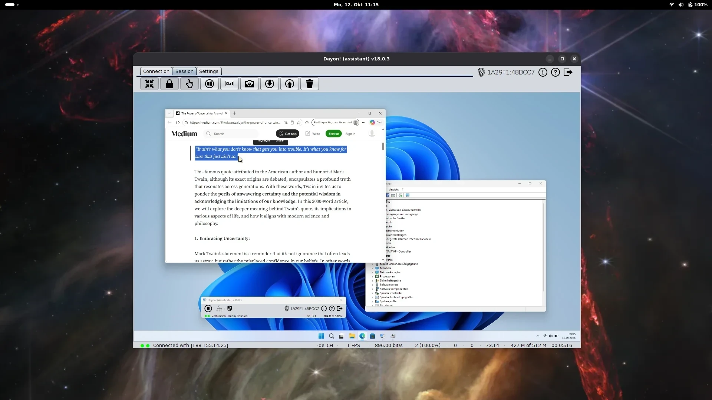

Remote desktop
Dayon! is an open-source and cross-platform (JAVA) solution that allows watching and controlling a remote computer. In this sense, it is very much similar to existing remote desktop solutions.
But I guess it's got some features that makes it valuable. You'll find more details in the Quick Start section.
Features
Easy setup
Dayon! is dedicated to people who are quite new in the computer world. There's no need to set up the network (i.e., no firewall setup, no router configuration, no NAT setup) on their computer. Dayon! is acting there as a client connecting to the monitoring computer.
Low network bandwidth
By default, Dayon! is sending compressed and cached gray (up to 256 levels) pictures to minimize the network usage offering as much as possible a real-time experience over the Internet. Those pictures are far enough for monitoring and explaining the different menus, icons and discovering the computer setup, etc...
Status (19)
Release 19 (Humble Hustler) comes with the ability to seamlessly restore interrupted sessions.
With Release 18 (Gusty Goblin), public STUN servers are queried as needed when establishing a connection. Optionally, private TURN/S servers can also be configured.
Since release 16 (Eager Eagle), the connection is automatically inverted if the port cannot be reached by the assistant.
From version 15 (Dolly Double), the remote desktop can also be transferred in colour.
Since version 12 (Adorable Asteroid), there are also portable versions for Linux, similar to the quick start versions
that have been available for Windows for some time.
These consist of two separate files - one for the assisted and one for the assistant.
They are called ‘Quickstart’ because they can be used to start the assisted or the assistant directly without prior installation
(restriction under Windows: a JRE is required). They are 100% compatible with the conventional Dayon!
See the full changelog
Rational
Marc Polizzi has developed Dayon! when he was living in the Philippines and was communicating with his family and friends back in Europe over Skype.
He didn't want them to set up their firewall, DSL/cable router and NAT and whatever else required for him to access their computer over a remote desktop connection. So he decided to implement something very simple in his spare time while also considering a low-bandwidth, high-latency network.
Several years later, I found this program on Sourceforge when I was looking for free cross-platform remote assistance solution. While using Dayon! to assist users running Windows 7 and later, I realised that it had some serious flaws. As the latest version (1.2) has been released back in early 2009, I decided to contact the author. With his consent I moved the source code of the project to GitHub in late 2016 and took over the further development.
By the way, Dayon! means "Come in!" in Visayas - a local Philippine dialect.
License
This program is a free software licensed under the GPL license.